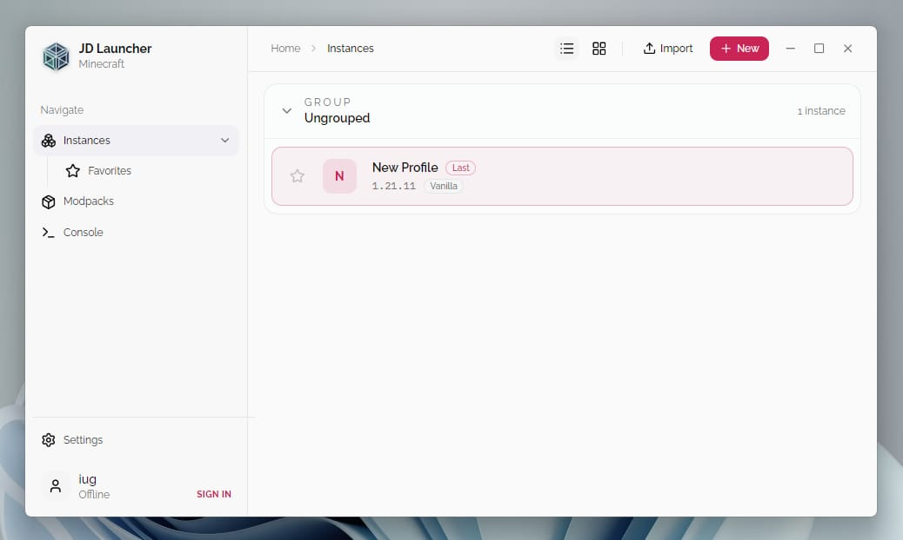
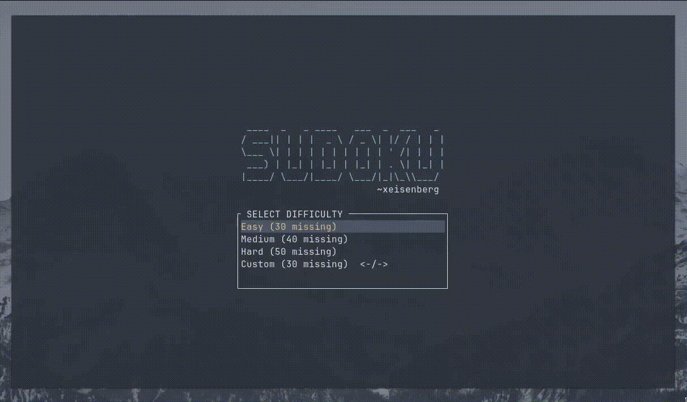
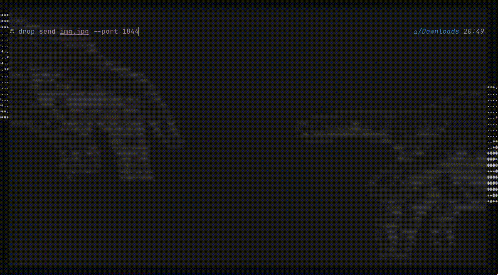
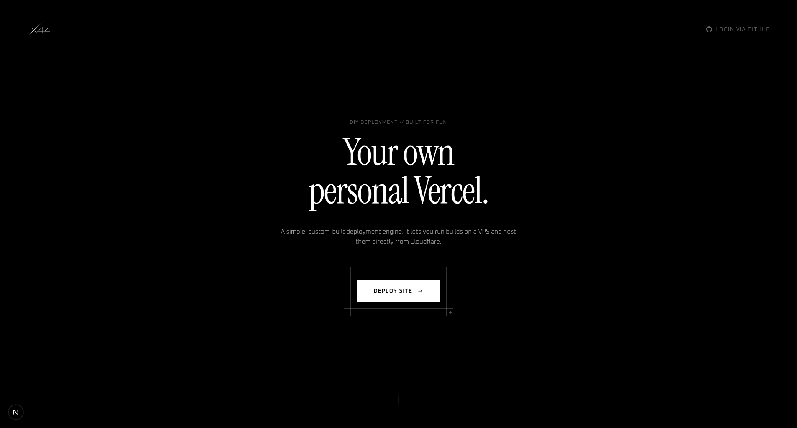

I am a 16 yo from India who loves building websites and CLI tools.

A modern Minecraft launcher built with React, Rust and Tauri. Fast, lightweight and beautifully designed.
View Project →
A keyboard-first terminal Sudoku game with a clean TUI and smooth gameplay.
View Project →
A terminal based file sharing tool that does not require you to install any app.
View Project →
A vercel like static site deployement platform.
View Project →